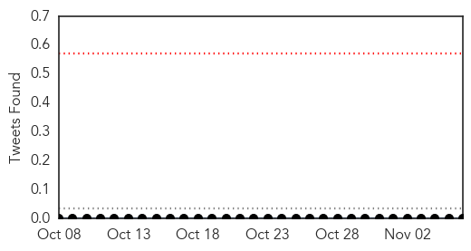
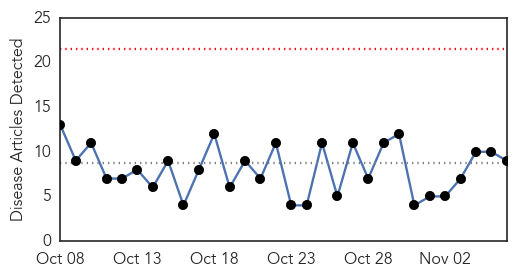

Yellow Fever
30-Day Web Trend
7 alerts, 0 warnings
30-Day Twitter Trend
2 alerts, 0 warnings

Article Locations

Article Confidences

Top Articles:
-
No articles found for Nov 06, 2014
Top Tweets:
-
No tweets found for Nov 06, 2014
Dengue Fever
30-Day Web Trend
0 alerts, 0 warnings

30-Day Twitter Trend
3 alerts, 0 warnings

Article Locations
Article Confidences

Top Articles:
- 0.998
- Winter brings dengue to Delhi: Capital suffers a spike in cases as 450 offices, schools and hospitals are prosecuted for failing to stop mosquitoes breeding
- 0.997
- Dengue fever sweeps Asia
- 0.954
- Salt Lake in dengue denial
- 0.935
- Dengue in Mumbai: BMC admits dengue in the city on a rise, with 4000 cases so far
- 0.849
- BMC unleashes fish, ladders, larvicide in battle against dengue
- 0.812
- World's first dengue vaccine likely by 2015
- 0.730
- Dengue toll 12, Bandra marked new hot zone
- 0.724
- Dengue-prone Asian countries first in line for new vaccine
- 0.624
- CHIKV joint pains may persist for months, doctor cautions
Top Tweets:
-
No tweets found for Nov 06, 2014